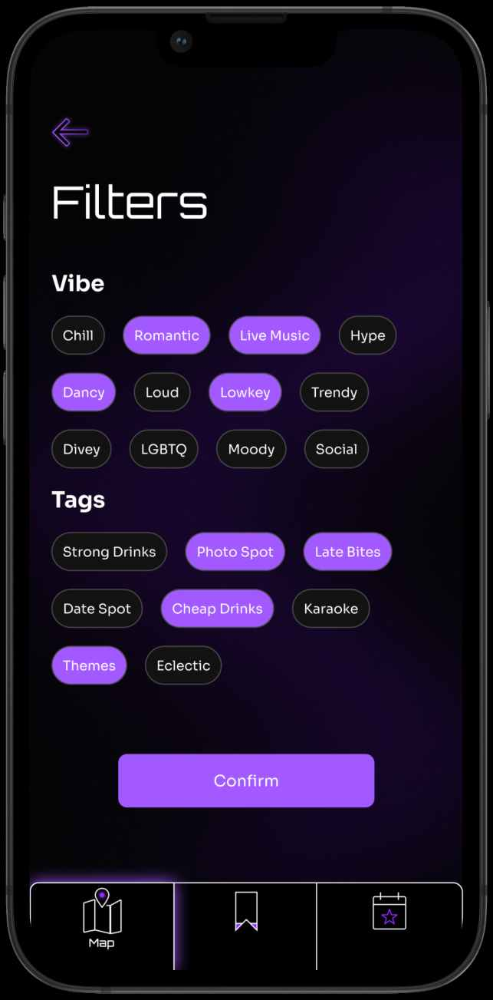
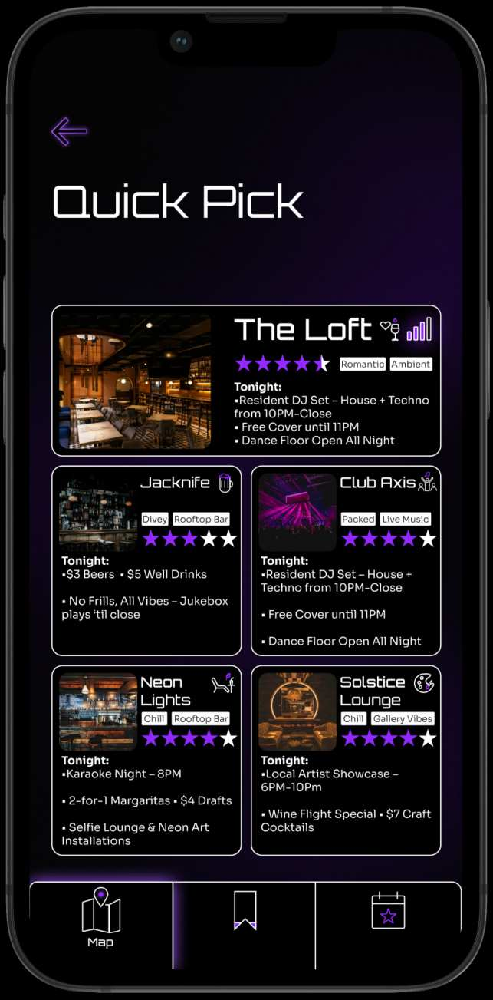
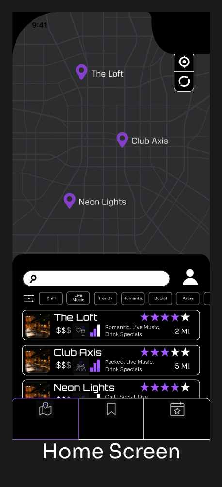
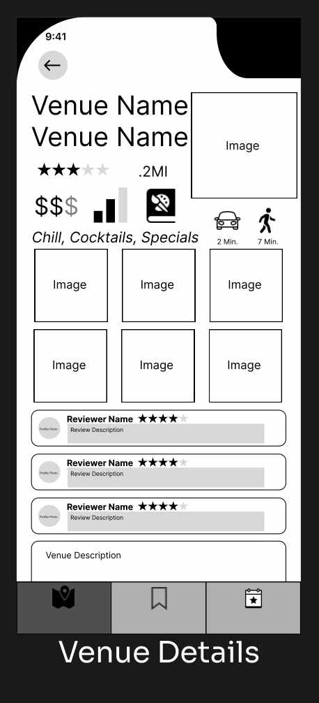
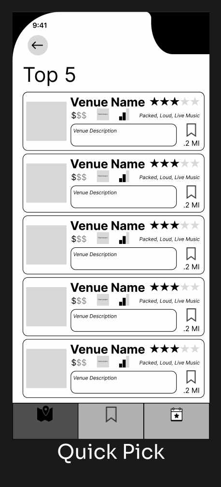
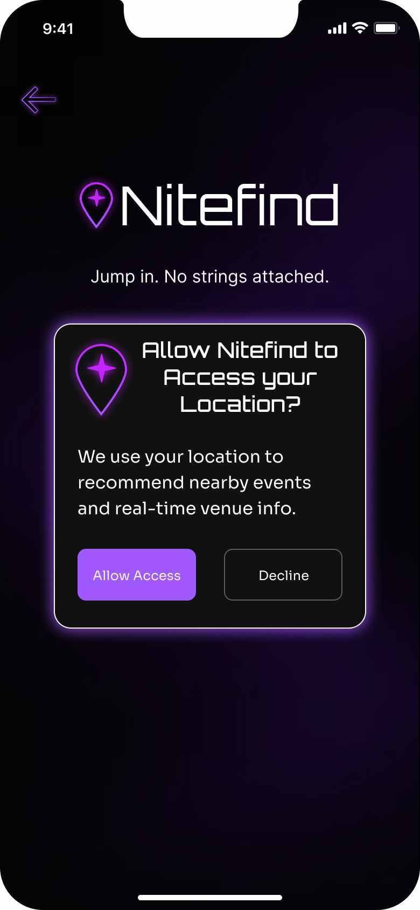
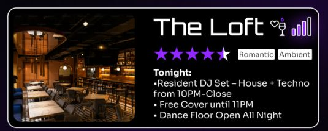
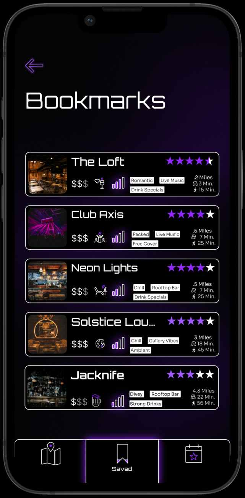
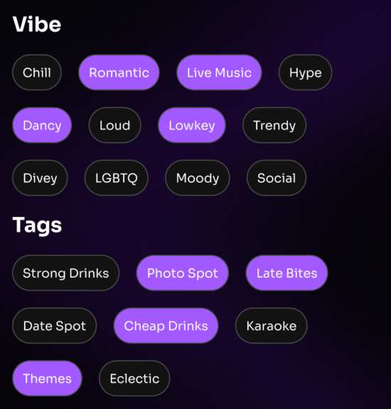

The research narrowed the product before I designed it.
Three recurring needs became three product priorities.
Vibe before category
People described the night they wanted more naturally through atmosphere than venue type.
Filters centered on qualities like romantic, chill, live music, crowd level, price, and niche tags rather than relying only on traditional venue categories.

What’s happening now
A good venue wasn’t useful if the information about it was stale.
Crowd indicators, current events, specials, distance, travel time, and venue activity became first-class information.

Reduce the choice
Sometimes people didn’t want better search tools. They wanted help making the decision.
Quick Pick surfaced a small set of recommendations matched to location and preferences rather than returning another long list.

Structure before polish.
With the core signals defined, I mapped the product around three high-value moments: discovering somewhere nearby, evaluating whether it fit the night, and getting to a decision quickly.
Map + filters

Venue details

Quick Pick

Midnight Grid over Alt Scene
Alt Scene captured nightlife more literally: eclectic, expressive, and energetic. I liked it more in isolation.
But NiteFind was supposed to reduce cognitive load. Adding another loud visual layer worked against that goal.
Midnight Grid won because the interface needed to organize nightlife, not compete with it.


Three tests. Four changes worth making.
3 participants · in person · mobile prototype
- People hesitated to share location with no context.
- Added a plain-language explanation and a way to continue without sharing location.
- Quick Pick didn’t clearly explain why a venue was being recommended.
- Added visible preference and filter context so the recommendation felt less arbitrary.
- Saving a venue lacked clear feedback.
- Added confirmation and a dedicated destination for saved venues.
- Advanced filters weren’t specific enough.
- Expanded the vocabulary toward more descriptive and niche qualities.
the fix, in the product



